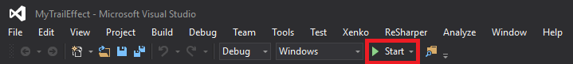

デバッグ
初級 プログラマー
実行時にスクリプトで期待される結果が得られない場合は、Visual Studio などの IDE でデバッグできます。
Note
コードをデバッグするにはさまざまな方法があります。ここでは、Visual Studio を使用する方法について説明します。
Visual Studio でスクリプトを開きます。
Tip
Game Studio からプロジェクトを Visual Studio で開くには、Game Studio のツールバーで
 (［Open in IDE］) をクリックします。
(［Open in IDE］) をクリックします。F9 キーを押して、必要な箇所にブレーク ポイントを追加します。
Visual Studio で、F5 キーを押すか、ツールバーの［開始］をクリックして、デバッグ モードでゲームを実行します。

ゲームが新しいウィンドウで開始します。Visual Studio のスクリプト ページで、最初のブレーク ポイントが強調表示されて、実行が止まります。
変数の状態を確認します。
コードを 1 行ずつ実行する場合は F10 キー (ステップ オーバー) を押し、コードの実行を続けるには F5 キーを押します。
Note
ブレーク ポイントで止まらない場合は、アクティブなシーンのエンティティにスクリプトをアタッチしてあることを確認してください。
Visual Studio でのデバッグの詳細については、MSDN のドキュメントを参照してください。